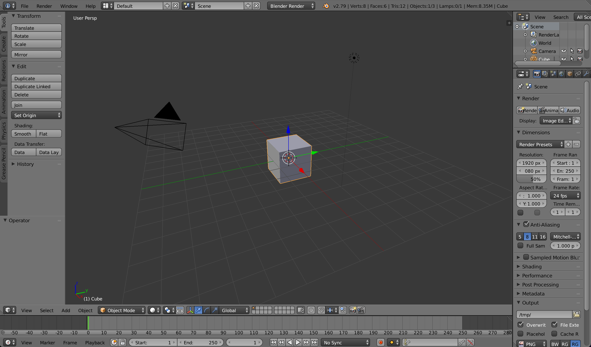
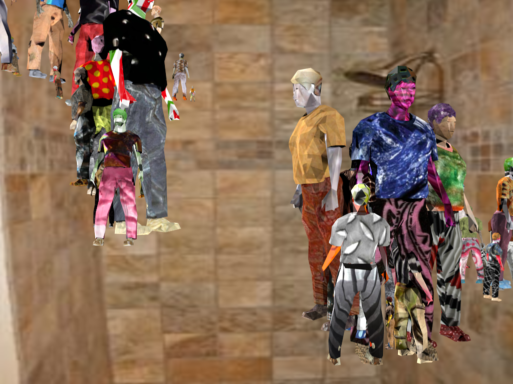
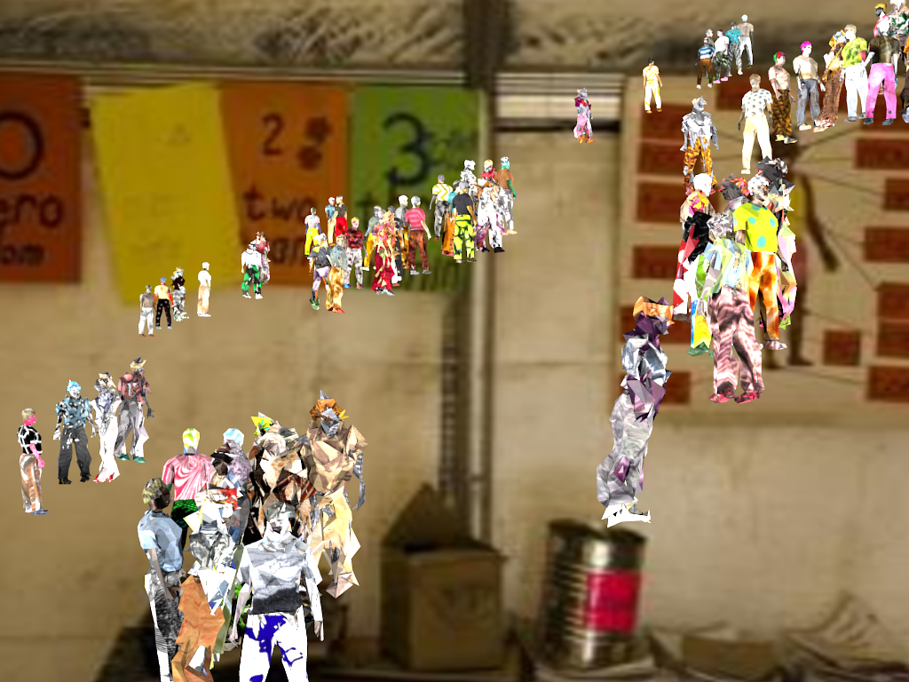
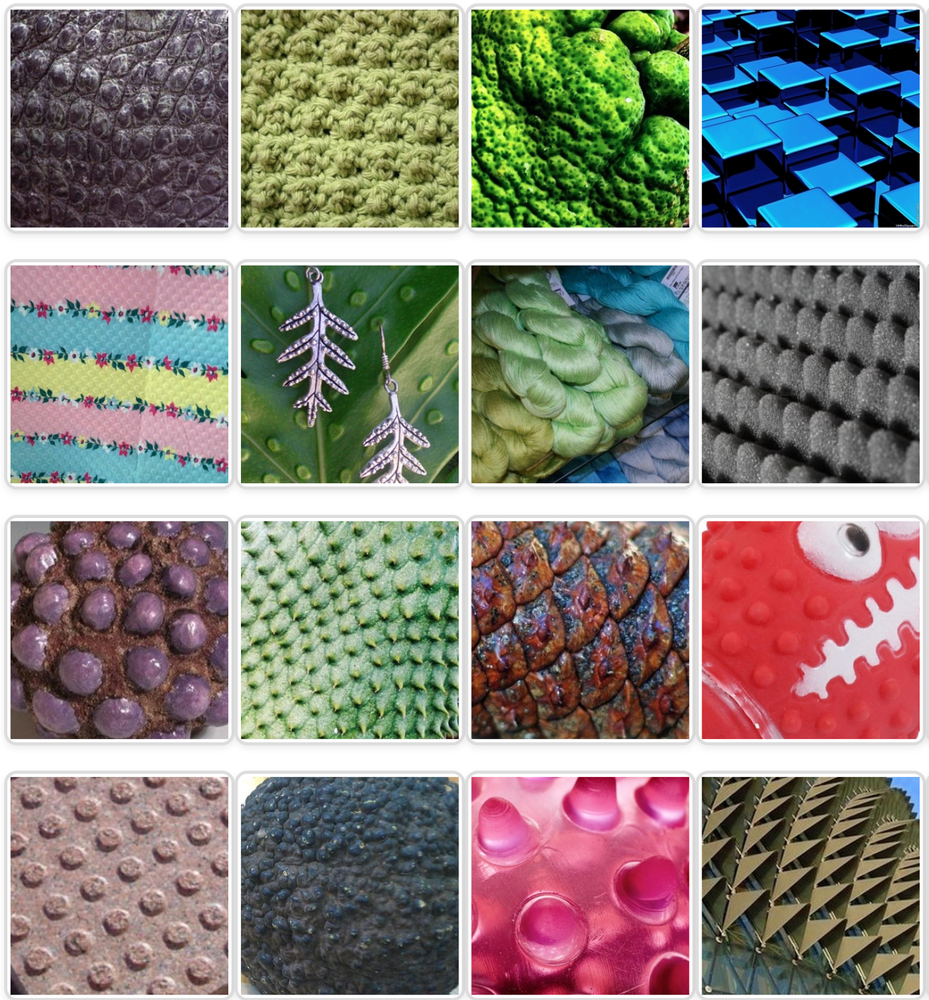
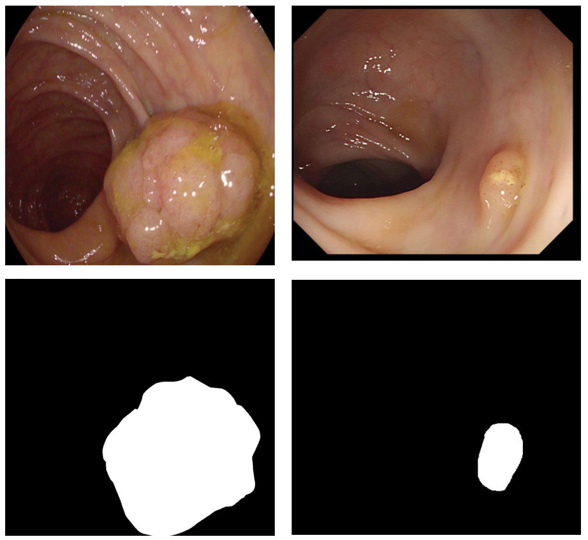
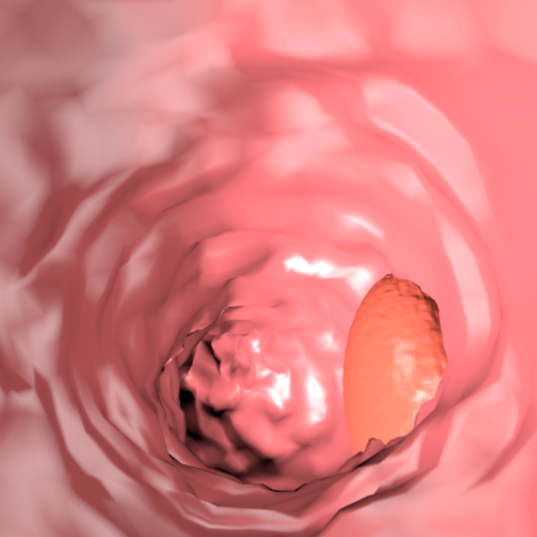
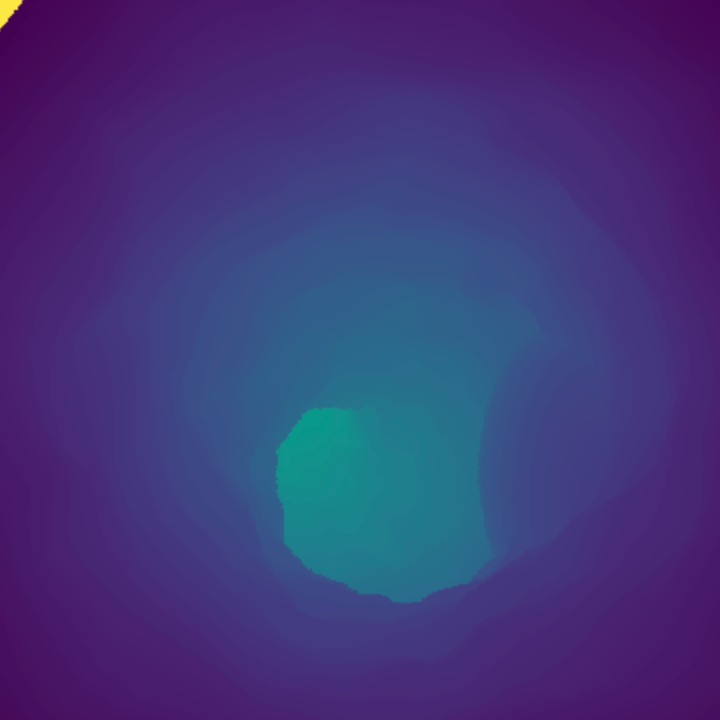

Exploring Synthetic Image Generation for Training Computer Vision Models under Data Scarcity
Enric Moreu, B.E., M.E.
Supervised by Prof. Noel E. O’Connor and Co-supervised by Dr. Kevin McGuinness
August 2023
Index
- 3D-based synthetic data
- Methodology
- Domain Randomization
- Domain Adaptation
- Pseudo-labels
- Conclusions
3D-based synthetic data

3D environment
3D-based synthetic data
3D model
3D-based synthetic data
Background image
3D-based synthetic data
Lighting and camera parameters
Methodology
1. Generate synthetic images
RQ1: How realistic should the synthetic data be?
2. Train a computer vision model
RQ2: Can labels improve the synthetic images?
3. Evaluate on real images
RQ3: How can we use unannotated real images to improve the model?
RQ1: How realistic should the synthetic data be?
85,324 faces
102 faces
Domain Randomization
☐Domain Randomization for Object Counting (2021)By default, computer vision models learn to extrapolate between domains
Synthetic
⟶
Real
Synthetic
Real
Domain randomization makes the model interpolate to the target domain

Randomizing a synthetic dataset

Randomizing a synthetic dataset

M. Cimpoi, S. Maji, I. Kokkinos, S. Mohamed, &
and A. Vedaldi (2014). Describing Textures in the Wild. In Proceedings of the IEEE Conf. on
Computer Vision and Pattern Recognition (CVPR).
import random
from sklearn.datasets import make_blobs
light_intensity = random.uniform(0.1, 2)
X, _ = make_blobs(n_samples=100, centers=10, n_features=2)
Domain Randomization doesn't work for domains with low variance
Domain adaptation
☐Synthetic data for unsupervised polyp segmentation (2021)
☐Joint one-sided synthetic unpaired image translation and segmentation for
colorectal
cancer prevention (2022)
Synthetic
⟶
Real
Domain adaptation reduces the dissimilarity between domains
Polyp segmentation
 Pogorelov, K., Randel, K., Griwodz, C., Eskeland, S., Lange, T., Johansen, D., Spampinato, C., Dang-Nguyen, D.T., Lux, M., Schmidt, P., Riegler, M., & Halvorsen, P. (2017). KVASIR: A Multi-Class Image Dataset for Computer Aided Gastrointestinal Disease Detection. In Proceedings of the 8th ACM on Multimedia Systems Conference (pp. 164–169). ACM.Synth-colon dataset
Synth-colon dataset
- 20.000 synthetic images
- Self-annotated
- Depth maps
- 3D objects
Synth-colon dataset


Adapting a synthetic dataset
 Chien-Hsiang Huang, Hung-Yu Wu, & Youn-Long Lin.
(2021). HarDNet-MSEG: A
Simple Encoder-Decoder Polyp Segmentation Neural Network that Achieves over 0.9 Mean Dice
and 86 FPS.
Chien-Hsiang Huang, Hung-Yu Wu, & Youn-Long Lin.
(2021). HarDNet-MSEG: A
Simple Encoder-Decoder Polyp Segmentation Neural Network that Achieves over 0.9 Mean Dice
and 86 FPS.
Adapting a synthetic dataset
 Taesung Park, Alexei A. Efros, Richard Zhang, &
Jun-Yan Zhu (2020). Contrastive Learning for Unpaired Image-to-Image Translation. In
European Conference on Computer Vision.
Taesung Park, Alexei A. Efros, Richard Zhang, &
Jun-Yan Zhu (2020). Contrastive Learning for Unpaired Image-to-Image Translation. In
European Conference on Computer Vision.
net_G = CutGenerator()
net_S = HarDMSEG()
adapted_image = net_G(synthetic_image)
prediction = net_S(adapted_image)
loss_G = criterion_G(adapted_image, synthetic_image)
loss_D = criterion_D(adapted_image, synthetic_image)
loss_S = criterion_S(prediction, synthetic_label)
loss_GAN = 0.1 * (loss_G + loss_D) + 0.9 * loss_S
loss_GAN.backward()
Synthetic
CycleGAN
CUT
CUT-Seg
Line chart with CSV data and JSON configuration
Pseudo-labels
☐Self-Supervised and Semi-Supervised Polyp Segmentation using Synthetic Data
(2023)
☐Fashion CUT: Unsupervised domain adaptation for visual pattern classification in
clothes using synthetic data and pseudo-labels (2023)